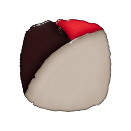
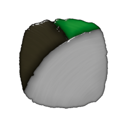
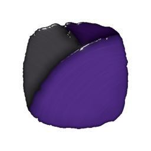

Coloring in Enshrouded
The Coloring Station
The coloring station in Enshrouded gives players lots of options when customizing your character's look. This applies to most armors and all of the cosmetic items, and I thought it would be cool to have a site where players can mess with both palettes and dyeable armors.
The following images show the variety of what the player can find in-game. Though all have an attached quest, they can still be found in certain areas of the open world.
Example Palettes
Each palette is made up of three colors, one making up around 70%, one making up around 20%, and the last only taking up around 10% of a full dyed set of equipment. Following are the links to the dyes themselves, as well as their appearance in-game.
  